系统需求分析与设计文档 · 第 2 册
智选云 AI 电商在线售货系统
系统设计报告
AI-ECP (AI E-Commerce Platform) — Software Design Description
| 文档编号 | AIECP-SDD-001 |
| 文档版本 | V1.0 |
| 系统代号 | AI-ECP |
| 建模语言 | UML 2.5（包图、类图、组件图、部署图、状态图、时序图） |
| 上游文档 | 《智选云 AI 电商在线售货系统 需求分析报告》AIECP-SRS-001 |
| 编制日期 | 2026 年 9 月 |
1 引言
1.1 编写目的
本报告承接《需求分析报告》（AIECP-SRS-001），把需求基线转化为可实现的软件设计。文档以 UML 2.5 为统一建模语言，给出系统的逻辑架构、静态结构、组件契约、部署形态、动态行为、数据模型与接口定义，是开发实现、联调测试与后期演进的直接依据。
本文档的预期读者包括：系统架构师、后端与前端开发工程师、测试工程师、运维工程师，以及参与项目评审的技术专家。
1.2 设计范围
本报告覆盖消费者商城、商家管理后台、运营数据看板三类客户端所共用的服务端系统，以及内建的 AI 能力中台。客户端界面视觉设计、第三方支付与物流系统的内部实现不在本报告范围内。
1.3 设计依据
- 《智选云 AI 电商在线售货系统 需求分析报告》（AIECP-SRS-001）
- OAuth2.0 / OpenID Connect 鉴权规范、RESTful API 设计规范
- OWASP ASVS 应用安全验证标准、OWASP LLM Top 10 大模型应用安全风险
2 设计目标与原则
2.1 设计目标
| 目标 | 设计含义 | 落地手段 |
|---|---|---|
| 结构可演化 | 品类与属性的变化不触碰代码 | 品类树与属性 Schema 全部数据化，业务读取 Schema 后动态渲染 |
| 能力可复用 | 三项 AI 能力共享同一套基础设施 | AI 能力中台统一提供模型网关、向量检索、提示词管理、工具注册与安全护栏 |
| 依赖可替换 | 大模型与算法组件可按需替换 | 以接口隔离外部依赖，通过工厂与适配器模式实现运行时选择 |
| 链路可降级 | AI 异常不阻断交易 | AI 调用全部包在降级策略内，超时或异常即回落到规则策略 |
| 风险可观测 | AI 行为可追溯、成本可控 | 全量记录 AI 调用、token 消耗、工具调用与护栏命中 |
2.2 设计原则
- 分层与依赖倒置：表现层、应用层、领域层、智能能力层、基础设施层自上而下单向依赖；领域层与智能能力层只依赖抽象接口，基础设施层反向实现这些接口。
- 契约先行：组件之间以接口契约协作，接口一经发布即保持向后兼容；新增字段而非修改字段。
- 关注点分离：业务编排（应用层）、业务规则（领域层）、AI 决策（智能能力层）、技术实现（基础设施层）四者严格分离。
- 配置优于编码：提示词、路由权重、召回路数、排序权重、业务过滤规则均以配置形式管理，支持热更新与灰度。
- 可测与可回滚：所有 AI 能力提供离线回放能力；品类版本支持整体回滚。
3 总体架构设计
3.1 架构视图总览
系统采用分层架构 + 能力中台的组合形态，共分为五层与一个横切公共层：
| 层次 | 职责 | 主要内容 |
|---|---|---|
| 表现层 | 协议适配与视图渲染 | 商城端、商家端、运营端三组控制器；统一参数校验与异常转换 |
| 应用层 | 用例编排与事务边界 | 品类应用服务、商品应用服务、订单应用服务、AI 应用服务 |
| 领域层 | 业务规则与领域模型 | 品类聚合、商品聚合、订单聚合、推荐领域服务、组货领域服务 |
| 智能能力层 | AI 决策与模型协作 | 能力抽象与策略集、模型网关适配、向量检索、提示词模板、工具注册 |
| 基础设施层 | 技术设施实现 | 持久化、缓存、消息、检索引擎、外部接口适配器 |
| 公共层（横切） | 跨层通用能力 | 统一响应封装、全局异常体系、通用工具与常量 |
3.2 分层包图
分层包图给出后端代码的包结构与依赖方向。图中 domain <.. infrastructure 的反向依赖虚线即为依赖倒置的体现：领域层定义仓储接口，基础设施层提供实现。
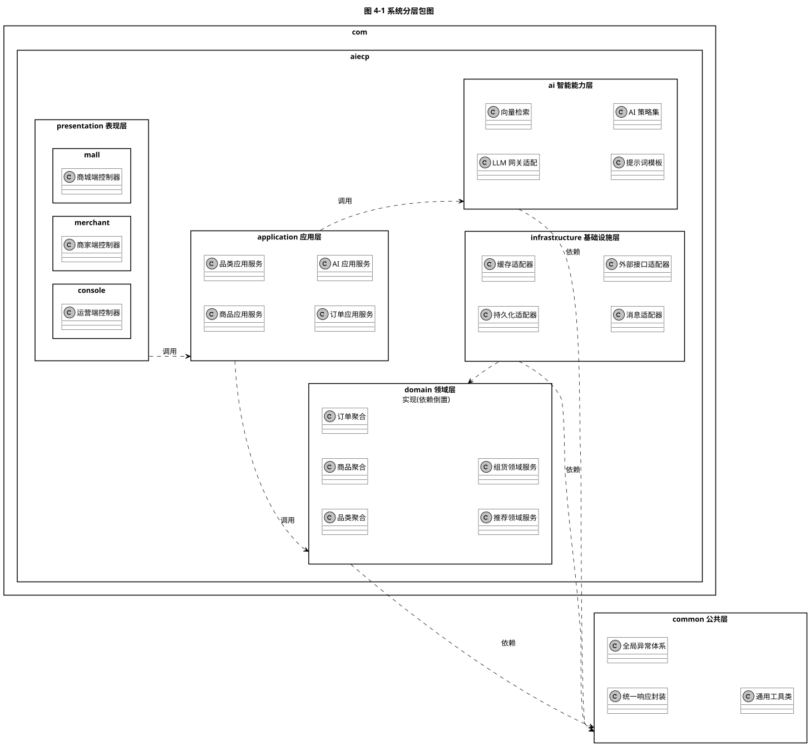
图 4-1 系统分层包图（源文件 04-01_pkg_layered.puml）
| 包路径 | 说明 |
|---|---|
| com.aiecp.presentation.mall | 消费者端接口，含商品、购物车、订单、AI 助手入口 |
| com.aiecp.presentation.merchant | 商家端接口，含品类导入、商品发布、库存与营销管理 |
| com.aiecp.presentation.console | 运营端接口，含看板、权限、模型与知识库配置 |
| com.aiecp.application | 应用服务，负责用例编排、事务边界与 DTO 转换 |
| com.aiecp.domain | 聚合、实体、值对象与领域服务，不含任何框架依赖 |
| com.aiecp.ai | AI 能力策略、模型适配、检索增强、提示词与工具注册 |
| com.aiecp.infrastructure | 仓储实现、缓存、消息、检索引擎与外部系统适配器 |
| com.aiecp.common | 统一响应、异常、工具与常量 |
4 静态结构设计
4.1 核心服务设计类图
核心服务设计类图给出控制层、应用服务层、领域层、智能能力层与仓储层的关键类及其依赖关系。设计上做了三处关键切分：
- 品类导入的「解析 / 校验 / 建树 / 衍生生成」被拆为四个独立领域服务，各自可单独测试与复用；
- AI 能力以抽象类
AiCapability为基类，三项能力作为具体策略实现，由AiCapabilityFactory按场景选择； - 仓储以接口形式定义在领域侧，实现类下沉至基础设施层。
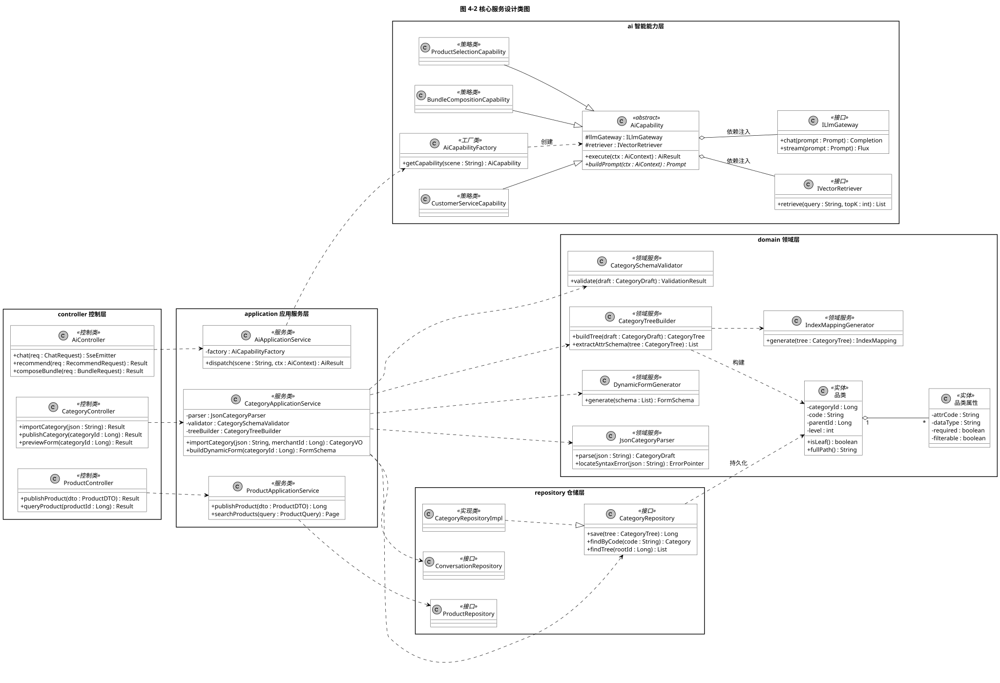
图 4-2 核心服务设计类图（源文件 04-02_class_service.puml）
4.1.1 关键类说明
| 类 / 接口 | 类型 | 职责 |
|---|---|---|
| CategoryApplicationService | 应用服务 | 编排品类导入用例：调用解析器、校验器、树构建器与动态表单生成器，在单个事务内完成落库 |
| JsonCategoryParser | 领域服务 | 把 JSON 文本反序列化为品类草稿对象；语法异常时返回可定位的错误指针 |
| CategorySchemaValidator | 领域服务 | 执行编码唯一性、层级深度、类型白名单、枚举完备性、区间合法性与循环引用等 12 项校验，一次性返回全部错误 |
| CategoryTreeBuilder | 领域服务 | 把品类草稿折叠为品类树，并按继承规则抽取属性 Schema |
| IndexMappingGenerator | 领域服务 | 按 filterable / searchable 标记生成检索引擎的字段映射 |
| DynamicFormGenerator | 领域服务 | 把属性 Schema 转换为前端表单描述（字段类型、校验规则、布局分组） |
| AiApplicationService | 应用服务 | 统一 AI 能力入口，做场景鉴权、参数规整、降级控制与结果后处理 |
| AiCapabilityFactory | 工厂类 | 按场景标识返回对应能力策略；支持运行时注册新能力 |
| AiCapability | 抽象类 | 定义 execute 模板方法与 buildPrompt / postProcess 两个抽象步骤，体现模板方法模式 |
| CategoryRepository | 接口 | 品类树的持久化契约，由基础设施层实现 |
4.2 AI 能力引擎类图
AI 能力引擎类图是 AI 能力中台的静态结构细化，围绕四条主线组织：
- 能力抽象与策略：
AiCapability作为抽象基类固定执行骨架，三项能力实现差异化提示词构建与后处理； - 模型适配：
ILlmGateway作为统一模型契约，本地模型与云端模型各自适配，LlmRouter负责按策略路由与故障转移； - 检索增强与工具：向量检索、重排、提示词模板与工具注册共同构成 RAG 与工具调用能力；
- 会话、安全与可观测：会话记忆、安全护栏、调用审计与 token 计量对所有能力统一生效。
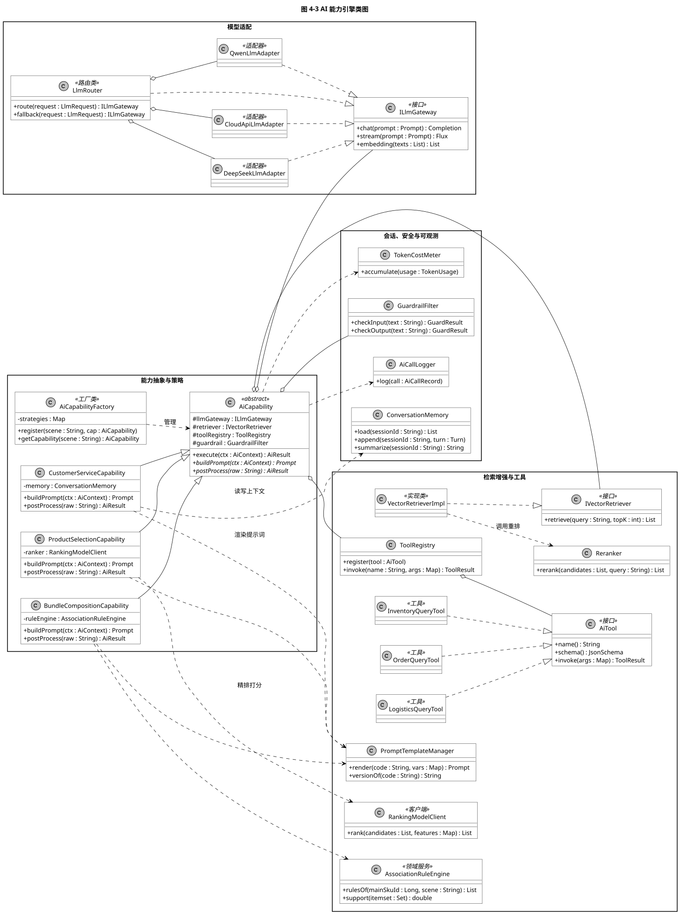
图 4-3 AI 能力引擎类图（源文件 04-03_class_ai.puml）
4.2.1 AiCapability 的模板方法
AiCapability.execute() 固定以下执行骨架，子类只实现差异化步骤，从而保证三项 AI 能力的安全护栏、审计与降级行为完全一致：
- 输入护栏检查（提示注入、越权意图、敏感词）
- 上下文装配（会话记忆、用户画像、页面上下文、品类 Schema 片段）
- 调用
buildPrompt()构建提示词（子类实现） - 按需执行检索增强与工具调用（由子类在提示词中声明的工具集决定）
- 经
ILlmGateway生成结果 - 调用
postProcess()做结构化解构与业务校验（子类实现） - 输出护栏检查与安全过滤
- 写入调用审计与 token 计量
4.3 设计模式应用说明
| 模式 | 应用位置 | 解决的问题 |
|---|---|---|
| 模板方法 | AiCapability 及其子类 | 统一 AI 能力的执行骨架与安全约束，避免策略实现者遗漏护栏与审计 |
| 策略 | CustomerServiceCapability / ProductSelectionCapability / BundleCompositionCapability | 三项 AI 能力的提示词、检索与后处理差异被封装为可替换策略 |
| 工厂 | AiCapabilityFactory | 按场景标识解耦调用方与具体能力实现，新增能力无需修改调用方 |
| 适配器 | QwenLlmAdapter / DeepSeekLlmAdapter / CloudApiLlmAdapter | 屏蔽不同模型服务在协议、鉴权与参数上的差异 |
| 仓储 | CategoryRepository 及其实现 | 隔离领域模型与持久化技术，支持替换存储实现 |
| 建造者 | CategoryTreeBuilder / DynamicFormGenerator | 把复杂的品类树与表单构建过程拆为可测试的分步操作 |
| 责任链 | 业务规则过滤链（下架、无库存、限购、合规） | 推荐结果的过滤规则可插拔、可排序、可单独开关 |
| 断路器 | LlmRouter 的故障转移 | 单一模型服务异常时自动切换，避免级联故障 |
5 组件与部署设计
5.1 系统组件图
系统组件图从物理实现视角给出组件划分与依赖关系：客户端经接入层（网关、鉴权、限流）访问应用服务层与 AI 能力中台；AI 能力中台通过大模型网关统一出口访问模型，通过向量检索服务访问向量库；数据层由关系库、缓存、检索、向量库、对象存储与消息队列共同构成。
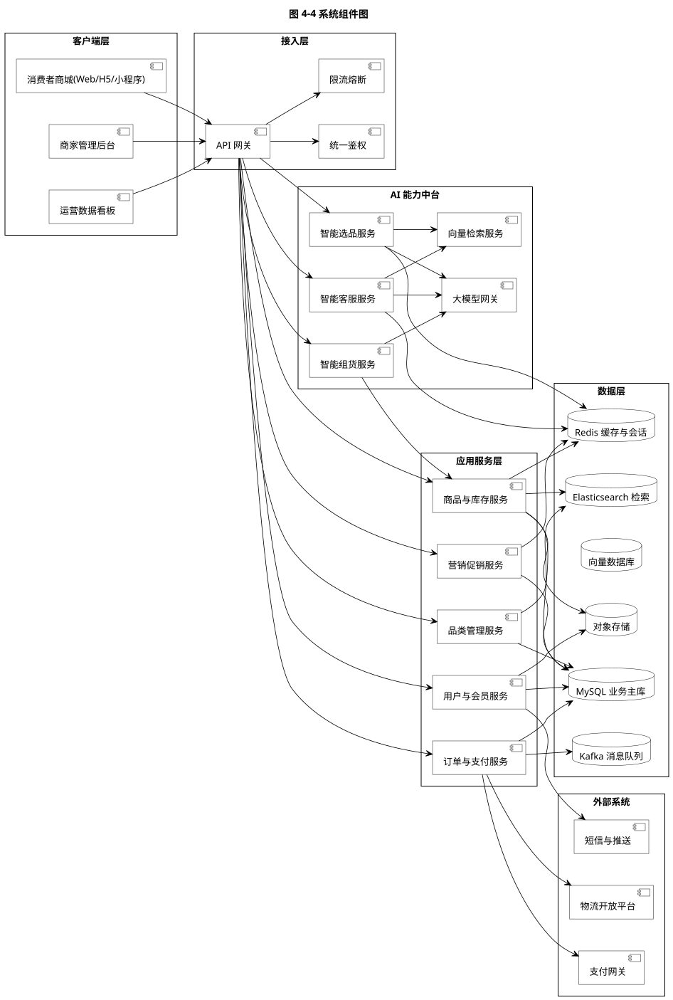
图 4-4 系统组件图（源文件 04-04_comp_overall.puml）
5.2 AI 能力中台组件与接口
AI 能力中台组件与接口图以 UML 的「供给接口（ball）」与「需求接口（socket）」刻画组件契约。三个业务能力组件统一供给 IAiCapability 接口，统一需求 ILlmGateway 与 IVectorSearch；智能选品额外需求画像与商品查询接口；智能组货额外需求规则引擎与商品查询接口。这种契约设计使组件可独立替换与独立扩容。
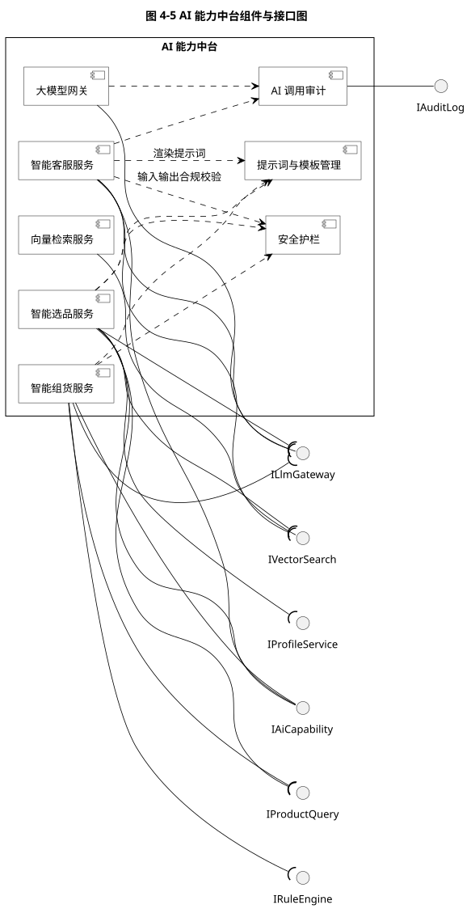
图 4-5 AI 能力中台组件与接口图（源文件 04-05_comp_ai.puml）
5.2.1 核心接口契约
| 接口 | 类型 | 契约说明 |
|---|---|---|
| IAiCapability | 供给 | execute(AiContext): AiResult；约定输入上下文字段、输出结构化结果与降级语义 |
| ILlmGateway | 供给 + 需求 | chat(Prompt): Completion、stream(Prompt): Flux、embedding(List): List |
| IVectorSearch | 供给 + 需求 | retrieve(query, topK): List<Chunk>；返回带相似度得分的知识片段 |
| IProfileService | 需求 | getProfile(userId): Profile；返回偏好品类、价格带与活跃度 |
| IProductQuery | 需求 | queryByIds、checkAvailability；供 AI 能力做商品事实校验 |
| IRuleEngine | 需求 | rulesOf(mainSkuId, scene)；返回关联规则候选 |
| IAuditLog | 供给 | log(AiCallRecord)；统一审计出口 |
5.3 部署设计
部署图给出生产环境的物理拓扑。整体划分为用户终端、接入与静态资源区、接入区（DMZ）、应用服务区（Kubernetes 集群）、AI 推理区与数据区，第三方服务位于系统信任边界之外。
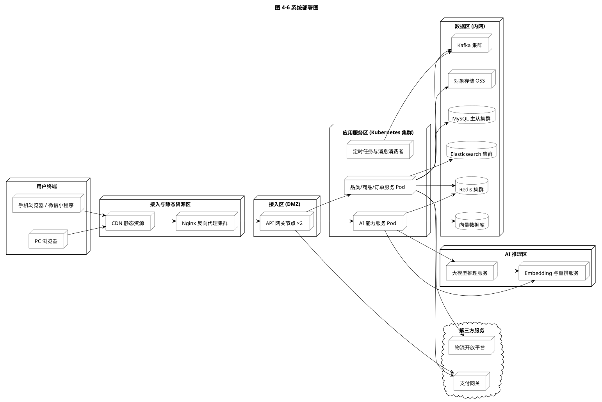
图 4-6 系统部署图（源文件 04-06_deploy.puml）
| 分区 | 部署内容 | 设计要点 |
|---|---|---|
| 接入与静态资源区 | CDN、Nginx 反向代理 | 静态资源全量 CDN 化；Nginx 承担 TLS 卸载、压缩与静态缓存 |
| 接入区（DMZ） | API 网关节点 ×2 | 双向冗余，承担路由、鉴权、限流、熔断与黑白名单 |
| 应用服务区 | 业务服务 Pod、AI 能力服务 Pod、定时任务与消息消费者 | 业务与 AI 服务独立部署、独立扩缩容；AI 服务故障不影响业务 Pod |
| AI 推理区 | 大模型推理服务、Embedding 与重排服务 | 可私有化部署，也可经大模型网关路由至云端 API；支持多模型并行与灰度 |
| 数据区 | MySQL 主从、Redis 集群、Elasticsearch、向量数据库、Kafka、对象存储 | 仅内网可达；读写分离；向量库与检索库独立扩容 |
6 动态行为设计
6.1 订单状态机
订单状态图定义订单对象从创建到终态的完整生命周期。设计上把「已支付」建模为复合状态，内部包含分单子流程，便于后续扩展多仓拆单与波次分拣。
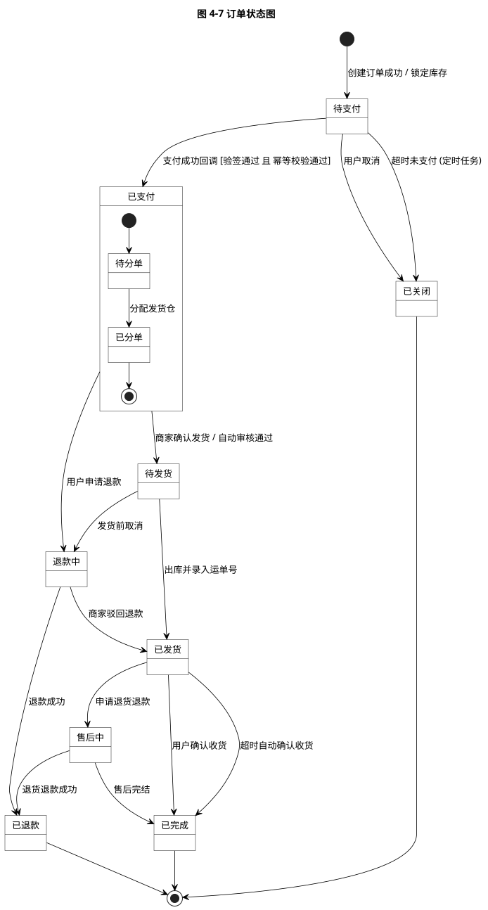
图 4-7 订单状态图（源文件 04-07_state_order.puml）
| 源状态 | 目标状态 | 触发事件 | 守卫条件 |
|---|---|---|---|
| — | 待支付 | 创建订单成功 | 库存锁定成功且金额计算完成 |
| 待支付 | 已支付 | 支付成功回调 | 验签通过且幂等校验通过 |
| 待支付 | 已关闭 | 用户取消 / 超时未支付 | 解除库存锁定成功 |
| 已支付 | 待发货 | 商家确认 / 自动审核通过 | 风控校验通过 |
| 待发货 | 已发货 | 出库并录入运单号 | 运单号非空 |
| 已发货 | 已完成 | 确认收货 / 超时自动确认 | 无进行中的售后退款单 |
| 已支付 / 待发货 / 已发货 | 退款中 | 申请退款 | 订单未被关闭 |
| 退款中 | 已退款 | 退款成功 | 支付网关返回退款成功 |
| 退款中 | 已发货 | 商家驳回退款 | 订单仍处于可发货状态 |
6.2 自定义品类 JSON 解析与入库
该时序图细化图 3-6 的活动流程，明确了两级校验的先后顺序与两处异常出口，并把「索引映射生成」置于落库之前、事务之外，避免长事务。
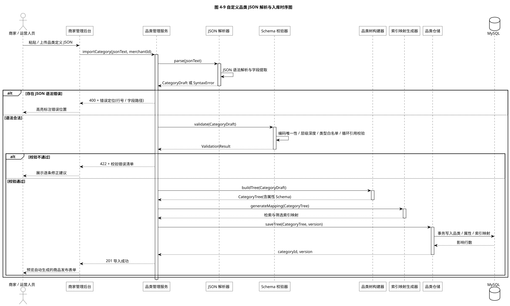
图 4-9 自定义品类 JSON 解析与入库时序图（源文件 04-09_seq_json_import.puml）
6.3 下单与支付
下单支付时序图把交易链路的关键一致性点显式表达出来：下单前先锁定库存、支付成功后扣减实际库存、支付结果回调必须幂等、履约通过消息队列解耦触发。
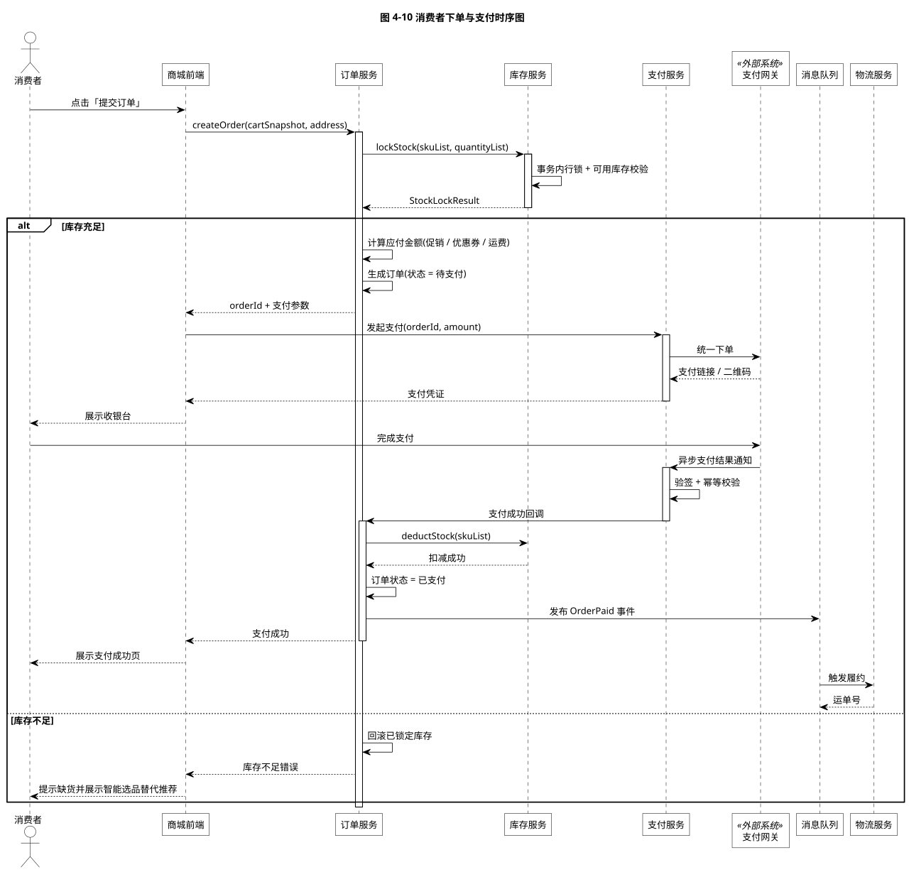
图 4-10 消费者下单与支付时序图（源文件 04-10_seq_order.puml）
| 一致性要点 | 设计措施 |
|---|---|
| 库存不超卖 | 锁定与扣减均在数据库事务内以行级锁完成，并在 SKU 维度增加版本号做乐观校验 |
| 支付幂等 | 以支付单号 + 渠道交易号建立唯一索引，重复回调直接返回成功而不重复变更状态 |
| 超时关单 | 定时任务扫描超时未支付订单，关闭订单并释放锁定的库存 |
| 履约解耦 | 支付成功后仅发布领域事件，履约与通知由独立消费者处理，失败可重试 |
6.4 智能客服咨询
智能客服时序图体现「意图分流」这一核心设计：知识咨询型意图走检索增强生成，业务工具型意图走受控工具调用，两类意图的结果统一交由大模型组织自然语言答复，最后经安全护栏过滤并以流式方式返回。
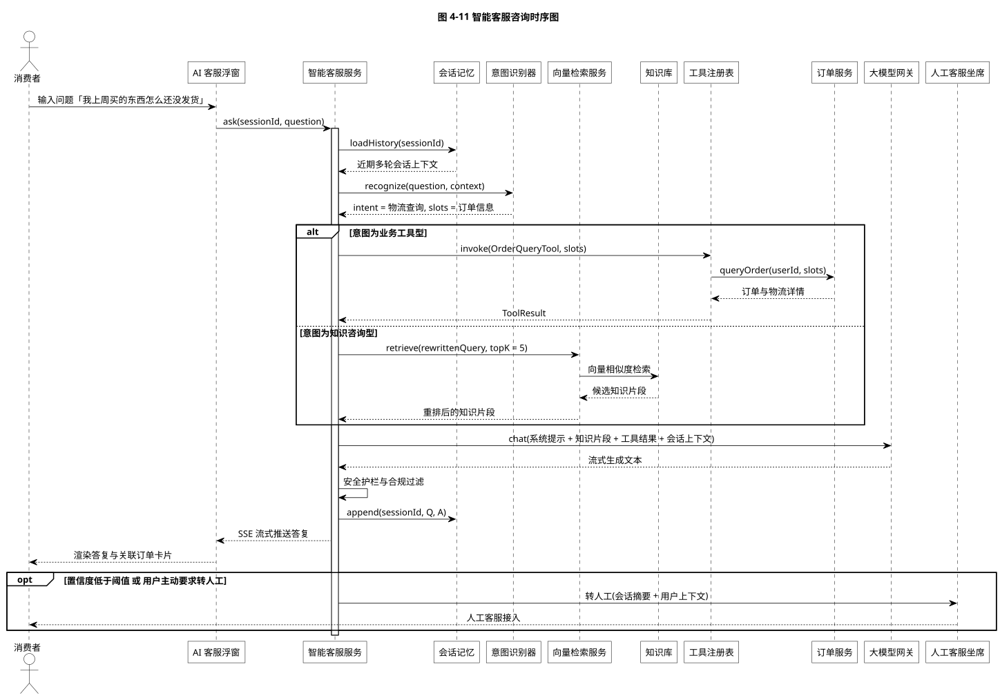
图 4-11 智能客服咨询时序图（源文件 04-11_seq_cs.puml）
| 设计要点 | 说明 |
|---|---|
| 意图分流 | 业务事实类问题必须走工具调用获取真实数据，禁止由模型凭上下文推断金额与时效 |
| 检索增强 | 检索结果须经重排后再入提示词，控制上下文长度并提升相关性 |
| 流式返回 | 采用服务端推送，首字延迟优先于完整生成时延，改善体感 |
| 降级与转人工 | 置信度低于阈值或用户主动要求时转人工，并携带会话摘要降低重复沟通成本 |
6.5 智能选品推荐
智能选品时序图给出推荐链路的请求编排：画像装载、多路并行召回、精排打分、业务规则过滤与多样性重排，最后按结果条数决定正排输出或冷启动兜底。
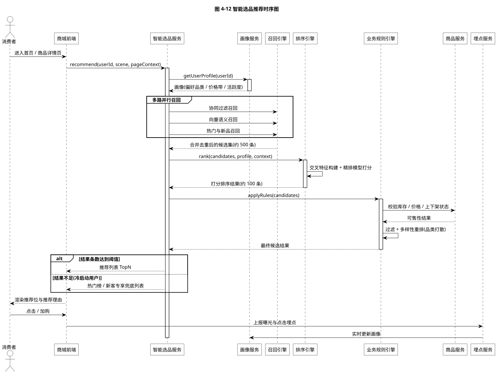
图 4-12 智能选品推荐时序图（源文件 04-12_seq_selection.puml）
6.6 智能组货搭配
智能组货时序图把「大模型生成」与「业务事实校验」明确分离：大模型只负责生成搭配理由与文案，而候选商品的可行性、价格与毛利全部由业务服务计算。这保证了组合方案的商业正确性。
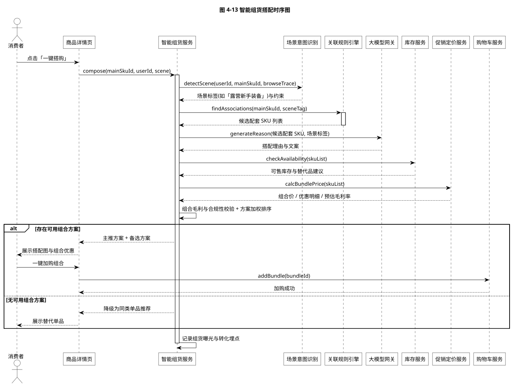
图 4-13 智能组货搭配时序图（源文件 04-13_seq_grouping.puml）
7 数据设计
7.1 核心数据模型
核心数据模型图给出 18 张核心表及其主外键关联。设计上把「品类结构」与「商品属性」彻底分离：品类与属性表描述「这个品类允许有哪些特征」，商品的属性取值表记录「这个 SKU 的特征值是什么」，从而支持同一套表结构承载任意自定义品类。
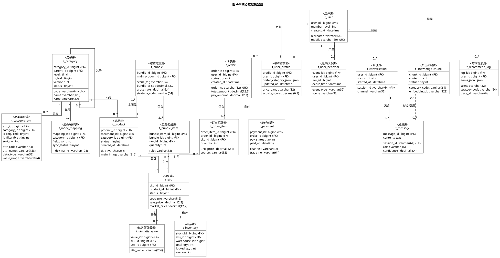
图 4-8 核心数据模型图（源文件 04-08_erd.puml）
7.2 核心表清单
| 表名 | 中文名称 | 关键设计说明 |
|---|---|---|
| t_category | 品类表 | 以 path 冗余全路径便于子树查询；version 支持品类版本管理与回滚 |
| t_category_attr | 品类属性表 | 属性 Schema 的落库形态；value_range 以 JSON 存储枚举项或数值区间 |
| t_index_mapping | 索引映射表 | 记录品类到检索引擎字段映射的关系与同步状态，支持重建索引 |
| t_product | 商品表 | SPU 主表，挂载品类与商家 |
| t_sku | SKU 表 | 规格、售价与市场价；规格文本冗余便于检索展示 |
| t_sku_attr_value | SKU 属性值表 | 以「SKU + 属性」为维度的稀疏表，承载任意自定义属性取值 |
| t_inventory | 库存表 | version 字段支持乐观锁；总库存与锁定量分离 |
| t_user | 用户表 | 手机号唯一索引；敏感字段加密存储 |
| t_user_profile | 用户画像表 | 偏好品类以 JSON 存储，便于画像迭代不锁表结构 |
| t_user_behavior | 用户行为表 | 按时间分区；承载推荐系统的样本回流 |
| t_order / t_order_item | 订单表 / 订单明细表 | 订单号全局唯一；明细保留 source 字段用于识别组货来源 |
| t_payment | 支付单表 | 渠道交易号唯一索引，保证回调幂等 |
| t_conversation / t_message | 会话表 / 消息表 | 支持多轮上下文回放；保留置信度用于质量分析 |
| t_knowledge_chunk | 知识片段表 | 记录切片内容与向量标识，支撑检索增强 |
| t_bundle / t_bundle_item | 组货方案表 / 组货明细表 | 记录场景标签、组合价、毛利率与策略标识，用于效果归因 |
| t_recommend_log | 推荐日志表 | 记录场景、策略与结果快照，支持离线回放与实验分析 |
7.3 索引与容量设计
| 对象 | 设计策略 |
|---|---|
| 品类子树查询 | 在 t_category.path 上建立前缀索引，子树查询以 LIKE 'path%' 实现，避免递归查询 |
| 商品检索 | 由 Elasticsearch 承载；索引字段随品类 Schema 动态生成，字段类型由 dataType 映射 |
| 向量检索 | 知识片段与商品描述向量分别建集合；采用近似最近邻索引以控制检索延迟 |
| 行为数据 | t_user_behavior 与 t_recommend_log 按月分区，历史分区归档至对象存储 |
| 缓存策略 | 品类树与属性 Schema 长驻缓存并在导入成功后主动失效；推荐结果按用户与场景短时缓存 |
| 分库分表 | 订单与行为类大表按用户标识分片；品类与商品表数据量可控，暂不拆分 |
8 接口设计
8.1 接口风格与统一约定
- 对外接口采用 RESTful 风格，路径以
/api/v1为前缀；AI 流式接口采用服务端推送。 - 统一响应体：
{ code, message, data, traceId }；code为 0 表示成功。 - 统一鉴权：请求头携带访问令牌；网关完成令牌校验与用户上下文注入。
- 统一幂等：写接口支持幂等键请求头，相同幂等键在有效期内只生效一次。
- 统一追踪：全链路透传
traceId，AI 调用额外透传aiTraceId以便关联模型调用日志。
8.2 关键接口清单
| 方法 | 路径 | 说明 | 对应需求 |
|---|---|---|---|
| POST | /api/v1/merchant/categories/validate | 品类 JSON 校验（dry-run，无副作用） | FR-07、FR-08 |
| POST | /api/v1/merchant/categories/import | 品类 JSON 正式导入 | FR-07、FR-08 |
| GET | /api/v1/merchant/categories/{id}/form-schema | 获取动态商品发布表单描述 | FR-09 |
| GET | /api/v1/mall/categories/tree | 获取品类树（消费者端） | FR-01 |
| GET | /api/v1/mall/products | 商品检索与筛选 | FR-01 |
| GET | /api/v1/mall/products/{id} | 商品详情与 SKU 列表 | FR-02 |
| POST | /api/v1/mall/cart/items | 加入购物车（支持单品与组合） | FR-03、FR-23 |
| POST | /api/v1/mall/orders | 创建订单 | FR-04 |
| POST | /api/v1/mall/payments/{orderId}/pay | 发起支付 | FR-04 |
| POST | /api/v1/callback/payment/{channel} | 支付结果回调（验签 + 幂等） | FR-04 |
| GET | /api/v1/mall/orders/{id}/logistics | 物流轨迹查询 | FR-05 |
| POST | /api/v1/ai/customer-service/chat | 智能客服对话（流式） | FR-13 ~ FR-16 |
| POST | /api/v1/ai/recommend/selection | 智能选品推荐 | FR-17 ~ FR-20 |
| POST | /api/v1/ai/bundle/compose | 智能组货方案生成 | FR-21 ~ FR-23 |
| POST | /api/v1/console/ai/prompts | 提示词模板发布 | FR-27 |
| POST | /api/v1/console/knowledge/documents | 知识库文档导入与切片 | FR-27 |
8.3 品类导入接口详细设计
接口：POST /api/v1/merchant/categories/import
| 项目 | 说明 |
|---|---|
| 请求体 | { "mode": "dryRun | commit", "jsonText": "<品类定义 JSON 字符串>", "overwrite": false } |
| 成功响应 | { "code":0, "data": { "categoryId":"...", "version":3, "generated": { "attrCount":12, "indexFields":7, "formSchemaId":"..." } } } |
| 语法错误响应 | { "code":40001, "message":"JSON 语法错误", "data": { "line":37, "column":12, "path":"category.children[1]", "detail":"Expected ',' or '}'" } } |
| 校验错误响应 | { "code":42201, "message":"品类结构校验未通过", "data": { "errors":[ {"rule":"V-03","path":"category.children[0].code","detail":"品类编码重复"} ] } } |
| 幂等要求 | 相同幂等键的重复提交返回首次结果，不重复创建品类版本 |
| 事务边界 | 仅落库阶段处于事务内；解析、校验与索引映射生成均在事务外完成 |
8.4 AI 能力接口详细设计
| 接口 | 关键请求字段 | 关键响应字段与降级语义 |
|---|---|---|
| 智能客服对话 | sessionId、question、pageContext、stream | 流式返回增量文本；结束帧携带 intent、confidence、citations、relatedOrder；置信度不足时携带 transferToAgent 建议 |
| 智能选品推荐 | scene、pageContext、limit、experimentTag | 返回 items[]（含商品标识、排序分、推荐理由、召回来源）；冷启动时返回 fallback=true 与热门列表 |
| 智能组货生成 | mainSkuId、sceneTag、budgetRange、limit | 返回 bundles[]（含主推标识、组合价、优惠明细、毛利等级、搭配理由）；无可行组合时返回 degraded=true 与同类单品列表 |
degraded 与 degradeReason 字段。调用方据此决定前端提示文案，禁止把降级结果当作正常结果呈现给用户。
9 非功能性设计
| 维度 | 设计措施 |
|---|---|
| 性能 | 热点数据多级缓存（本地缓存 + 分布式缓存）；商品检索下沉至检索引擎；推荐结果短时缓存；品类 Schema 长驻内存；AI 推理侧支持结果流式返回与批量向量化 |
| 可用性 | 网关与应用服务多副本；AI 能力具备模型级故障转移与规则级降级；关键依赖配置熔断与限流阈值；数据存储主从与定期备份 |
| 安全 | 统一鉴权与细粒度授权；传输加密；敏感字段加密存储与日志脱敏；支付回调验签与防重放；AI 侧实施输入输出双向护栏、工具白名单与参数白名单 |
| 可扩展 | 品类结构、提示词、模型路由、召回路数与排序权重全部配置化；组件间以接口契约协作；新增 AI 能力只需实现策略并注册 |
| 可观测 | 全链路追踪贯通业务与 AI 调用；AI 调用记录 token 消耗、首字时延、总时延、护栏命中与工具调用明细；按业务指标与资源指标分级告警 |
| 可维护 | 严格分层与依赖倒置；领域层无框架依赖；核心领域服务可脱离容器独立单测；品类解析与校验具备完整用例集 |
10 实施与交付
10.1 代码结构约定
后端采用多模块工程：aiecp-common、aiecp-domain、aiecp-ai、aiecp-application、aiecp-infrastructure、aiecp-bootstrap。前端分为消费者端、商家端与运营端三个独立工程，共用组件库与接口 SDK。
10.2 技术选型建议
| 层次 | 选型建议 | 说明 |
|---|---|---|
| 后端框架 | Java 17 + Spring Boot 3.x | 生态成熟，与容器化部署、可观测组件衔接顺畅 |
| 关系数据库 | MySQL 8.x | 支持 JSON 字段，便于承载画像与索引映射等半结构化数据 |
| 缓存 | Redis 7.x | 承担会话记忆、热点数据与计数器 |
| 检索 | Elasticsearch 8.x | 支持动态字段映射，契合品类 Schema 动态生成索引的需求 |
| 向量检索 | 向量数据库（支持近似最近邻索引） | 承载知识片段与商品语义向量 |
| 消息 | Kafka | 承载订单事件、行为埋点与索引同步 |
| 容器编排 | Kubernetes | 业务与 AI 服务独立扩缩容 |
| 大模型 | 统一接入网关，支持私有化与云端双通道 | 通过配置路由，避免业务代码绑定具体模型 |
10.3 交付物清单
| 交付物 | 内容 |
|---|---|
| 需求分析报告 | AIECP-SRS-001（Word 文档 + 静态网页版） |
| 系统设计报告 | AIECP-SDD-001（Word 文档 + 静态网页版） |
| UML 模型源文件 | 22 个 PlantUML 源文件，覆盖用例图、活动图、类图、包图、组件图、部署图、状态图、时序图 |
| UML 渲染图集 | 22 幅矢量图（SVG）与高分辨率位图（PNG，200 DPI） |
| 整合静态站点 | 含渲染脚本、站点构建脚本与可离线浏览的完整站点 |
| 需求追踪矩阵 | 需求—用例—UML 图—设计章节的双向追溯关系 |
10.4 后续演进建议
- 品类规范演进：为品类 JSON 引入
extensions保留字段，允许在不破坏兼容性的前提下扩展自定义语义。 - AI 能力增强：在智能客服引入多模态输入（图片识别商品），在智能组货引入季节与地域约束。
- 推荐体系深化：建设统一的特征平台与在线学习链路，缩短模型迭代周期。
- 成本治理：建立按业务场景的 token 预算与配额机制，避免 AI 成本失控。